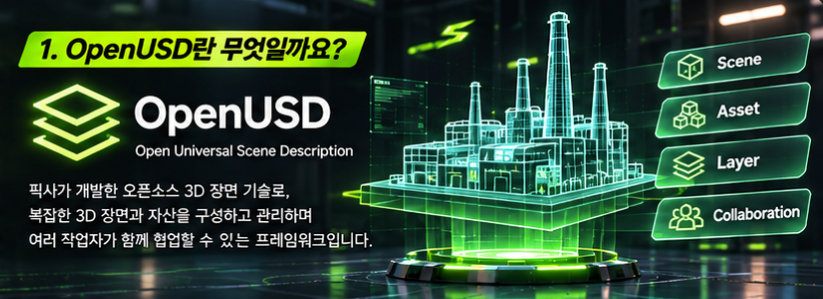
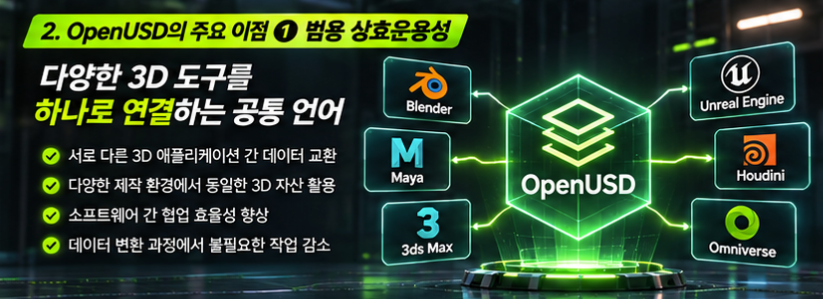
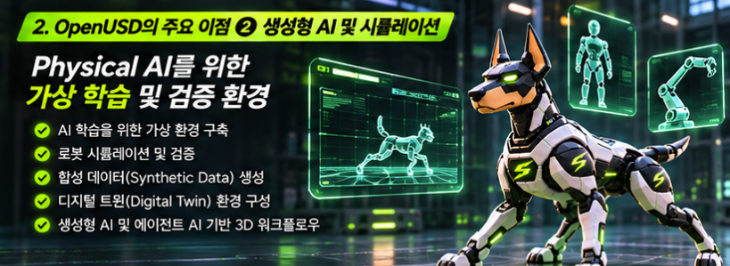
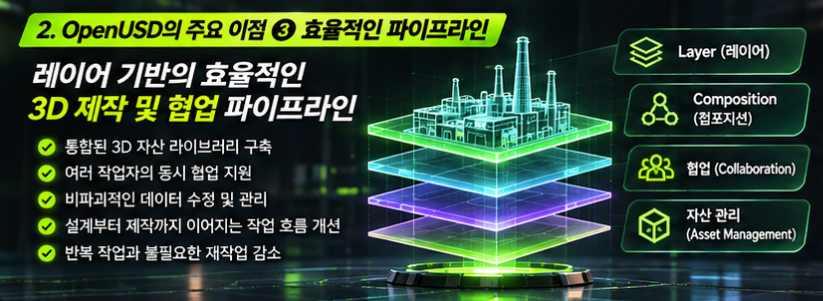
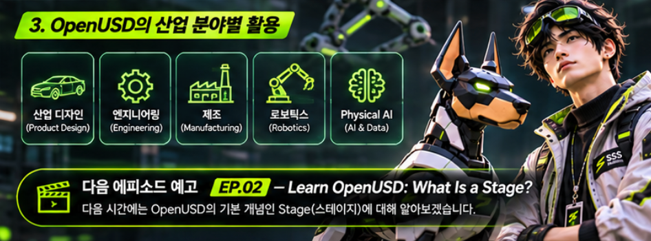
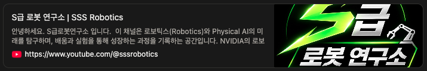

• Youtube :
https://www.youtube.com/@sssrobotics

📌 안녕하세요!
S급 로봇 연구소(SSS Robotics)입니다. 🤖오늘부터 NVIDIA Omniverse에서 제공하는 OpenUSD 교육 콘텐츠를 기반으로, 3D 기술과 로보틱스 시뮬레이션의 핵심 개념을 하나씩 알아보겠습니다.
첫 번째 시간에는 앞으로 배울 OpenUSD의 가장 기본적인 질문부터 시작하겠습니다.
"왜 우리는 OpenUSD를 사용해야 할까요?"3D 산업에서는 다양한 소프트웨어와 도구를 사용하여 모델링, 설계, 시뮬레이션 및 렌더링 작업을 수행합니다.
하지만 서로 다른 프로그램에서 제작한 3D 데이터를 하나의 환경에서 통합하고 협업하려면 여러 가지 문제가 발생할 수 있습니다.
이러한 문제를 해결하기 위한 핵심 기술 중 하나가 바로 OpenUSD(Open Universal Scene Description) 입니다.

📚 목차
- 📖 오늘의 진행 내용 (Today's Topics)
- 📕 1. OpenUSD란 무엇일까요?
- 📄 1-1. OpenUSD가 필요한 이유
- 📕 2. OpenUSD의 주요 이점 3가지
- 📄 2-1. 범용 상호운용성 (Universal Interoperability)
- 📄 2-2. 생성형 AI 및 시뮬레이션 지원 (Generative AI & Simulation)
- 📄 2-3. 효율적인 파이프라인 (Efficient Pipeline)
- 📕 3. OpenUSD의 산업 분야별 활용
- 📄 3-1. 주요 활용 분야
- 📜 회고 및 다음 과제 (Retropective&Next Steps)
- 👥 참고 문헌 (References)
- 📨 문의하기 (Contact us)
📖 오늘의 진행 내용 (Today's Topics)
📕 1. OpenUSD란 무엇일까요?

OpenUSD(Open Universal Scene Description)는 픽사(Pixar)가 개발한 오픈소스 3D 장면 기술로, 현재는 다양한 산업 분야에서 활용되고 있습니다.
단순히 3D 모델을 저장하는 파일 형식에 그치지 않고, 복잡한 3D 장면과 자산을 구성하고 관리하며 여러 작업자가 함께 협업할 수 있도록 지원하는 프레임워크입니다.
특히 서로 다른 3D 애플리케이션에서 제작한 데이터를 통합하고, 복잡한 가상 환경을 효율적으로 구성할 수 있다는 장점이 있습니다.
📄 1-1. OpenUSD가 필요한 이유
기존 3D 제작 환경에서는 사용하는 소프트웨어에 따라 데이터 형식과 작업 방식이 달라지는 경우가 많습니다.
예를 들어 모델링 프로그램에서 제작한 3D 자산을 다른 시뮬레이션 프로그램으로 가져오려면 데이터 변환이나 추가적인 작업이 필요할 수 있습니다.
OpenUSD는 이러한 문제를 줄이고 서로 다른 3D 도구와 데이터 간의 연결을 지원합니다.
이를 통해 다양한 소프트웨어를 사용하는 작업자들이 하나의 공통된 3D 데이터 환경에서 협업할 수 있습니다.
📕 2. OpenUSD의 주요 이점 3가지
OpenUSD를 사용하는 이유는 크게 세 가지로 정리할 수 있습니다.
📄 2-1. 범용 상호운용성 (Universal Interoperability)

첫 번째는 서로 다른 3D 소프트웨어와 데이터 형식 간의 상호운용성입니다.
OpenUSD는 다양한 3D 애플리케이션을 연결하는 공통 언어 역할을 합니다.
이를 통해 각 작업자는 기존에 사용하던 도구를 유지하면서도 동일한 3D 데이터를 공유하고 활용할 수 있습니다.
주요 장점은 다음과 같습니다.
- 서로 다른 3D 애플리케이션 간 데이터 교환
- 다양한 제작 환경에서 동일한 3D 자산 활용
- 소프트웨어 간 협업 효율성 향상
- 데이터 변환 과정에서 발생하는 불필요한 작업 감소
즉, 서로 다른 도구를 사용하더라도 하나의 연결된 3D 환경을 구축할 수 있다는 것이 핵심입니다.
📄 2-2. 생성형 AI 및 시뮬레이션 지원 (Generative AI & Simulation)

두 번째는 생성형 AI와 시뮬레이션 기술을 연결하는 기반이라는 점입니다.
최근 AI 기술은 단순한 텍스트 및 이미지 생성을 넘어 실제 물리 환경에서 동작하는 로봇과 자율 시스템으로 확장되고 있습니다.
이러한 Physical AI 기술을 개발하려면 현실 세계와 유사한 가상 환경을 구축하고, 다양한 상황에서 데이터를 생성하고 학습하는 과정이 중요합니다.
OpenUSD는 복잡한 3D 장면과 가상 환경을 구성하고 관리할 수 있기 때문에 다음과 같은 분야에서 활용될 수 있습니다.
- AI 학습을 위한 가상 환경 구축
- 로봇 시뮬레이션 및 검증
- 합성 데이터(Synthetic Data) 생성
- 디지털 트윈(Digital Twin) 환경 구성
- 생성형 AI 및 에이전트 AI 기반 3D 워크플로우
특히 NVIDIA Omniverse와 Isaac Sim 같은 기술과 함께 활용하면 로봇이 현실 세계에 투입되기 전에 가상 환경에서 다양한 상황을 학습하고 검증하는 데 도움을 줄 수 있습니다.
📄 2-3. 효율적인 파이프라인 (Efficient Pipeline)

세 번째는 3D 제작 및 협업 파이프라인의 효율성입니다.
대규모 3D 프로젝트에서는 여러 작업자가 동일한 자산을 수정하거나 서로 다른 부분을 동시에 작업하는 경우가 많습니다.
OpenUSD는 레이어(Layers)와 컴포지션(Composition) 등의 기능을 활용하여 기존 데이터를 직접 덮어쓰지 않고도 여러 작업자의 변경 사항을 통합할 수 있도록 지원합니다.
주요 장점은 다음과 같습니다.
- 통합된 3D 자산 라이브러리 구축
- 여러 작업자의 동시 협업 지원
- 비파괴적인 데이터 수정 및 관리
- 설계부터 제작까지 이어지는 작업 흐름 개선
- 반복 작업과 불필요한 재작업 감소
결과적으로 복잡한 3D 프로젝트에서도 자산을 효율적으로 관리하고 개발 속도를 높일 수 있습니다.
📕 3. OpenUSD의 산업 분야별 활용
OpenUSD는 특정 산업에만 국한된 기술이 아닙니다.
다양한 3D 데이터와 가상 환경을 필요로 하는 산업 전반에서 활용 가능성이 확대되고 있습니다.
📄 3-1. 주요 활용 분야
- 산업 디자인: 제품 설계 및 3D 시각화
- 엔지니어링: 복잡한 설계 데이터 통합 및 검증
- 제조: 생산 공정 시뮬레이션 및 디지털 트윈
- 로보틱스: 로봇 시뮬레이션 및 가상 환경 구축
- Physical AI: 가상 환경 기반 학습 및 합성 데이터 생성
특히 로보틱스 분야에서는 OpenUSD를 기반으로 가상 공간을 구성하고, 로봇의 움직임과 주변 환경을 시뮬레이션하는 데 활용할 수 있습니다.
이러한 기술은 현실 세계의 로봇 개발과 가상 환경을 연결하는 중요한 기반이 됩니다.

🎬 다음 에피소드 예고
EP.02 OpenUSD의 Stage란 무엇일까요?
다음 시간에는 OpenUSD에서 가장 기본이 되는 개념 중 하나인 Stage(스테이지)에 대해 알아보겠습니다.
3D 장면을 구성하고 관리하는 Stage는 어떤 역할을 할까요?
다음 에피소드에서 함께 살펴보겠습니다!
📜 회고 및 다음 과제 (Retropective&Next Steps)

오늘은 OpenUSD를 왜 사용해야 하는지, 그리고 어떤 장점을 가지고 있는지 살펴보았습니다.
핵심 내용을 다시 정리해 보겠습니다.
- 범용 상호운용성: 서로 다른 3D 애플리케이션과 데이터를 연결합니다.
- 생성형 AI 및 시뮬레이션: Physical AI와 가상 환경 구축을 지원합니다.
- 효율적인 파이프라인: 여러 작업자가 효율적으로 협업하고 3D 자산을 관리할 수 있습니다.
OpenUSD는 단순한 3D 파일 형식을 넘어 산업 디자인, 엔지니어링, 제조 및 로보틱스 분야에서 활용되는 중요한 3D 데이터 기술입니다.
특히 앞으로 Physical AI와 로봇 시뮬레이션 기술이 발전할수록 OpenUSD의 역할은 더욱 중요해질 것으로 기대됩니다.
👥 참고 문헌 (References)
- NVIDIA Omniverse — Learn OpenUSD
- Pixar — Universal Scene Description (OpenUSD)
- OpenUSD Official Documentation — https://openusd.org/
📨 문의하기 (Contact us)


- Youtube :
https://www.youtube.com/@sssrobotics - Blog :
https://www.sssrobotics.com
#OpenUSD #오픈USD #NVIDIA #엔비디아 #NVIDIA Omniverse #엔비디아 옴니버스 #3D 시뮬레이션 #Physical AI #피지컬AI #디지털트윈 #로봇 시뮬레이션 #합성데이터 #Synthetic Data #3D 데이터 #3D 협업 #로보틱스 #인공지능 #산업용 AI #S급로봇연구소 #SSSRobotics